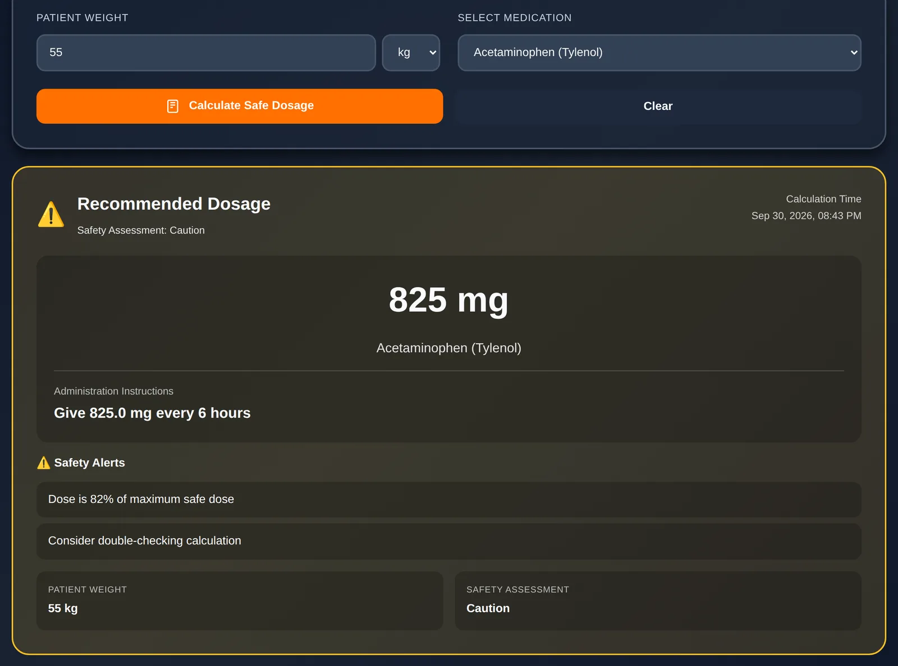
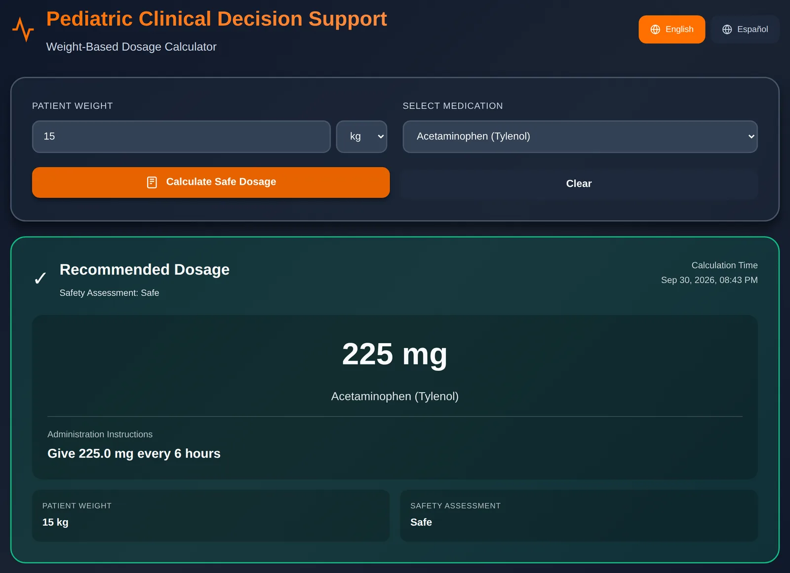
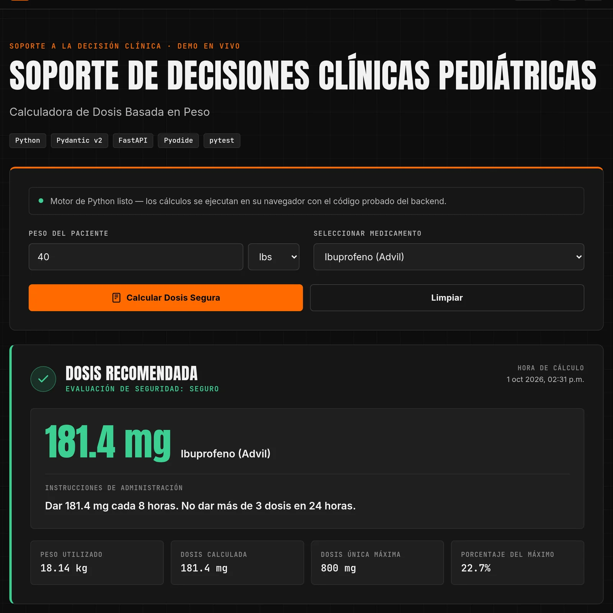

Case study · Clinical decision support
Caso · Soporte a la decisión clínica
Pediatric CDS Dosage Calculator
Calculadora pediátrica de dosis (CDS)
A safety-critical, bilingual dosing tool that automates weight-based pediatric calculations and refuses to accept an unsafe dose: a hard stop above the maximum, a caution zone near it, and caregiver instructions in English and Spanish.
Una herramienta de dosificación bilingüe y crítica para la seguridad que automatiza cálculos pediátricos por peso y se niega a aceptar una dosis insegura: parada estricta sobre el máximo, zona de precaución cerca de él e instrucciones en inglés y español.
Try it live: the demo runs the tested Python backend directly in your browser through Pyodide (WebAssembly), so every dose you see comes from the same code the test suite covers. No server is involved, and nothing you type leaves your device.
Pruébela en vivo: la demo ejecuta el backend de Python probado directamente en su navegador mediante Pyodide (WebAssembly), así que cada dosis que ve viene del mismo código que cubren las pruebas. No hay servidor y nada de lo que escribe sale de su dispositivo.
Situation & task
Situación y tarea
[S] Situation: the stakes of pediatric dosing
[S] Situación: lo que está en juego
Pediatric dosing errors are among the most dangerous never events in healthcare. Children need weight-based dosing (mg/kg), so a math slip or a misplaced decimal can mean a 10-fold overdose — and language barriers between providers and non-English-speaking caregivers raise the risk of errors at home.
Los errores de dosificación pediátrica están entre los eventos más peligrosos en salud. Los niños requieren dosis por peso (mg/kg), así que un error de cálculo o un decimal mal puesto puede significar una sobredosis de 10 veces — y las barreras de idioma entre proveedores y cuidadores aumentan el riesgo de errores en casa.
[T] Task: fail-safe logic and equity
[T] Tarea: lógica a prueba de fallos y equidad
Build a decision-support tool that (1) removes manual math with validated calculations, (2) enforces a hard stop for unsafe doses, and (3) closes the equity gap with native-language instructions for Spanish-speaking families.
Construir una herramienta que (1) elimine el cálculo manual con cálculos validados, (2) imponga una parada estricta para dosis inseguras y (3) cierre la brecha de equidad con instrucciones en el idioma de las familias hispanohablantes.
Actions
Acciones

[A] Hard-stop guardrail
[A] Barrera de parada estricta
If the calculated dose exceeds the medication's maximum single dose, the backend returns a CRITICAL result instead of a dose. The interface shows the calculated and maximum values and an explicit DO NOT ADMINISTER warning, so an unsafe number is never presented as a recommendation.
Si la dosis calculada supera la dosis máxima del medicamento, el backend devuelve un resultado CRÍTICO en lugar de una dosis. La interfaz muestra el valor calculado y el máximo, con una advertencia explícita de NO ADMINISTRAR, para que una cifra insegura nunca se presente como recomendación.

[A] Caution zone at 80%
[A] Zona de precaución al 80%
A dose can be safe and still high. Above 80% of the maximum, the result turns amber and tells the clinician the exact percentage, prompting a second look at the weight entry. Escalating only when it matters keeps the tool from causing alert fatigue.
Una dosis puede ser segura y aun así alta. Por encima del 80% del máximo, el resultado se vuelve ámbar e indica el porcentaje exacto, para revisar de nuevo el peso ingresado. Escalar solo cuando importa evita la fatiga de alertas.

[A] Validated weight-based math
[A] Cálculo por peso validado
The dose is weight (kg) × rate (mg/kg), rounded half-up to 0.1 mg. A Pydantic v2 model converts pounds with the exact factor and rejects any weight outside 1–200 kg before a calculation runs, which catches decimal and unit slips at the door. The number of doses per 24 hours is capped by both the dosing interval and the maximum daily dose.
La dosis es peso (kg) × tasa (mg/kg), redondeada a 0.1 mg. Un modelo Pydantic v2 convierte las libras con el factor exacto y rechaza cualquier peso fuera de 1–200 kg antes de calcular, lo que detecta errores de decimal o de unidad desde el inicio. El número de dosis en 24 horas se limita tanto por el intervalo como por la dosis máxima diaria.

[A] Bilingual instructions for equity
[A] Instrucciones bilingües para la equidad
A JSON-based i18n layer (en.json / es.json) switches the whole interface without a reload or losing entered data. The backend returns every message in both languages, so the last result switches language too, without a second calculation. Families receive discharge guidance in the language they actually read.
Una capa i18n basada en JSON (en.json / es.json) cambia toda la interfaz sin recargar ni perder datos. El backend devuelve cada mensaje en ambos idiomas, así que el último resultado también cambia de idioma sin recalcular. Las familias reciben indicaciones en el idioma que realmente leen.
Dosing rules in the prototype
Reglas de dosificación del prototipo
Values configured in the backend for demonstration — not clinical guidance.
Valores configurados en el backend para demostración — no son guía clínica.
| MedicationMedicamento | mg/kg | Max single doseDosis máxima | EveryCada | Max per dayMáximo diario |
|---|---|---|---|---|
| AcetaminophenAcetaminofén | 15 | 1,000 mg | 6 h | 4,000 mg |
| IbuprofenIbuprofeno | 10 | 800 mg | 8 h | 3,200 mg |
| AmoxicillinAmoxicilina | 20 | 1,500 mg | 12 h | 3,000 mg |
| Calculated doseDosis calculada | ResultResultado |
|---|---|
| ≤ 80% of maximum≤ 80% del máximo | SAFE — dose and instructionsSEGURO — dosis e instrucciones |
| 80–100% of maximum80–100% del máximo | CAUTION — dose plus double-check alertPRECAUCIÓN — dosis y alerta de verificación |
| Above maximumSobre el máximo | CRITICAL — no dose; DO NOT ADMINISTERCRÍTICO — sin dosis; NO ADMINISTRAR |
[R] Result
[R] Resultado
Prevents overdoses
Previene sobredosis
The hard stop removes the possibility of accepting a 10× dose produced by manual math.
La parada estricta elimina la posibilidad de aceptar una dosis 10× producida por cálculo manual.
Standardizes care
Estandariza la atención
Every clinician uses the same formula and limits, reducing practice variation.
Cada clínico usa la misma fórmula y límites, reduciendo la variación.
Improves health equity
Mejora la equidad
Spanish-speaking families get the same quality of instructions as English speakers.
Las familias hispanohablantes reciben instrucciones de la misma calidad.
Reduces cognitive load
Reduce la carga cognitiva
The math is automated, so clinicians can focus on the patient.
El cálculo es automático, así que el clínico puede enfocarse en el paciente.
Architecture
Arquitectura
formulary.py— reference data, immutablemodels.py— Pydantic v2 contracts, unit conversion, weight rangecalculations.py— pure clinical logic, no I/Oservice.py— validate → assess → bilingual response, shared by the API and the browserapi.py— FastAPI routes and CORS only- Quality: 58 pytest tests, 100% coverage, CI on Python 3.11–3.13
formulary.py— datos de referencia, inmutablesmodels.py— contratos Pydantic v2, conversión de unidades, rango de pesocalculations.py— lógica clínica pura, sin E/Sservice.py— validar → evaluar → respuesta bilingüe, compartido por la API y el navegadorapi.py— solo rutas FastAPI y CORS- Calidad: 58 pruebas pytest, 100% de cobertura, CI en Python 3.11–3.13
Privacy
Privacidad
Stateless by design: each request carries only a weight, a medication, and a language. No patient identifiers are collected, stored, or logged, and in the live demo the calculation never leaves the browser.
Sin estado por diseño: cada solicitud lleva solo un peso, un medicamento y un idioma. No se recopilan, almacenan ni registran identificadores de pacientes, y en la demo el cálculo nunca sale del navegador.